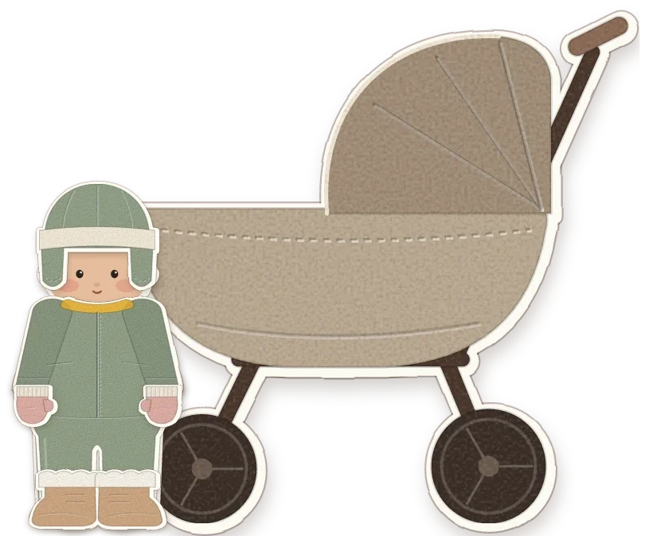
Babies
Warm in the pram
Little ones riding in a pram or stroller sit still and get cold sooner, so we dress them a layer warmer and add a footmuff or blanket when it's frosty.
For parents of babies, toddlers & kids
Pompom checks the forecast for the hours you'll actually be outside, adds your child's age and how they get around, and shows the outfit layer by layer on a paper doll — built from the clothes you already own.
Free download · Premium optional
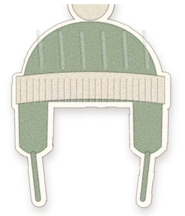
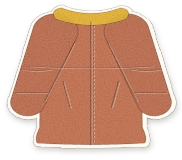
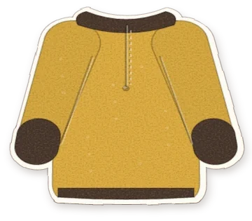
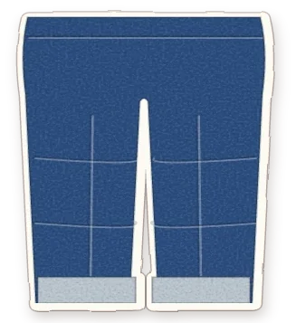
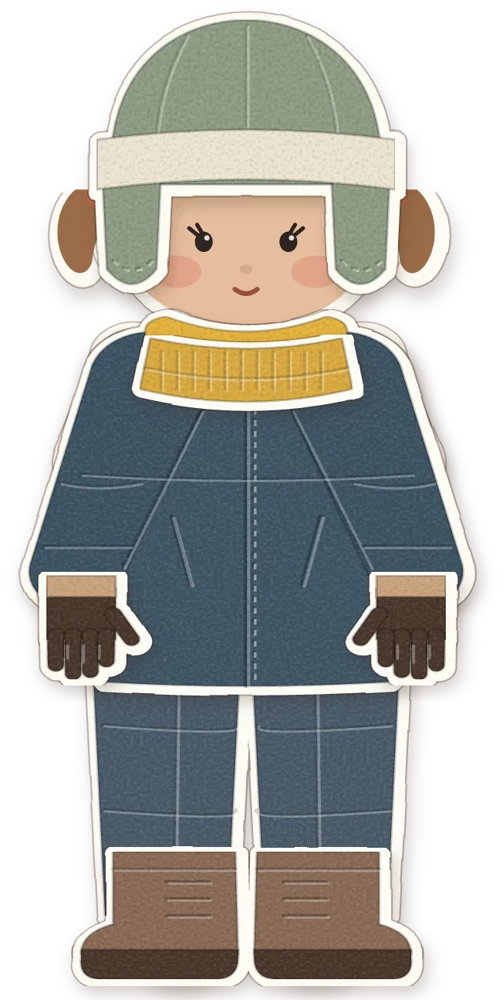
How it works
Set it up once in about a minute. After that, today's outfit is waiting whenever you open the app.
First name, birthday and how you usually go out: in a stroller, on foot, or running around the playground.
We read the forecast for exactly those hours: feels-like temperature, wind, rain and UV.
The outfit appears layer by layer, from base layer to hat and boots, with a reminder when one matters.
Made for your child
How to dress a baby for the weather is a different question from toddler clothing by temperature. Pompom answers both.

Little ones riding in a pram or stroller sit still and get cold sooner, so we dress them a layer warmer and add a footmuff or blanket when it's frosty.
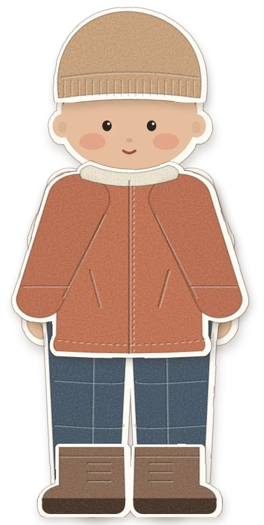
Layers that come off easily when they warm up, waterproof boots when it's wet, and a nudge to pack spare socks.
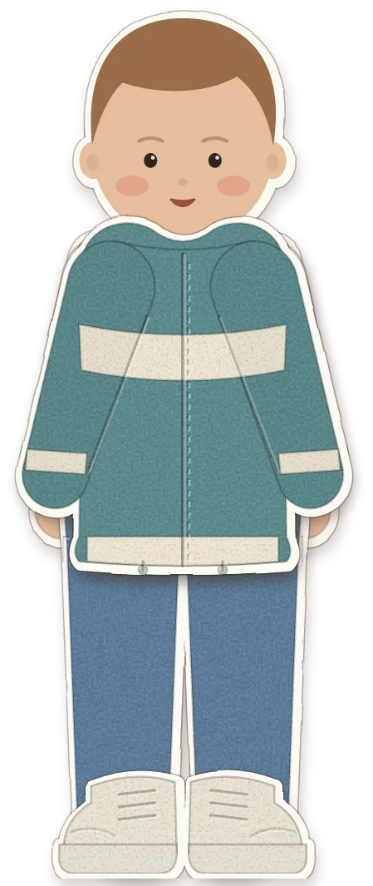
Kids who climb and race around warm up fast. We dress them a little lighter so they don't overheat, then fine-tune from your feedback.
Features
A kids' weather outfit that thinks about the details, so you don't have to at 7:45 am.
Feels-like temperature, wind, rain and UV for the hours you'll be outside, not a whole-day average. A sunny 2 pm and a windy 9 am need different jackets.
Add your child's wardrobe and every outfit is built from what's actually in the drawer. Mark items "in the laundry" or "getting small" and we'll work around them.
Sunscreen when UV is high (from 6 months), a protective cream for cheeks in frost, water on hot days, thin gloves in a pocket when it may turn cooler.
In extreme cold we suggest a shorter walk or staying in; in serious heat, the cooler hours and shade, following published pediatric guidance.
Puffy coats and car-seat harnesses don't mix. Driving to the park? We'll remind you to buckle up first and put the coat or a blanket on top.
Tap Cold, Fine or Hot after the walk. If your little one always runs warm or gets chilly, the next outfits adjust.
Add more than one child and invite a second parent, so whoever's on morning duty sees the same outfit.
No ads and no ad trackers, and we never sell your data. Start as a guest or sign in with Apple, and delete everything in one tap.
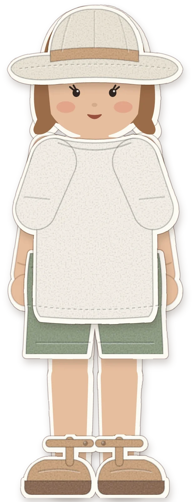
Based on pediatric guidance
Our dressing rules draw on publicly available guidance about children, cold, heat and sun from:
Good to know: Pompom gives general, informational suggestions. It is not medical advice, and it isn't affiliated with or endorsed by the organisations above. You know your child best: if they seem cold, hot or unwell, trust what you see and talk to your pediatrician.
A peek inside
Open the app, see the doll, get dressed. That's the whole morning routine.
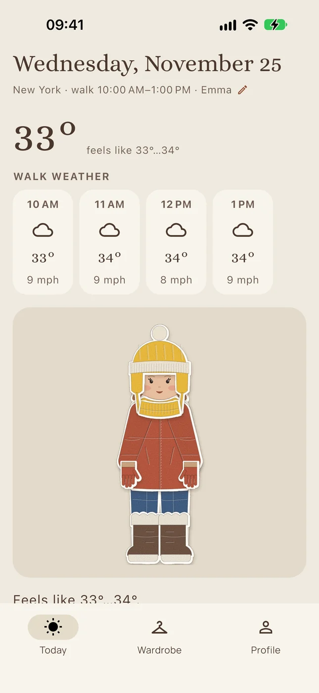
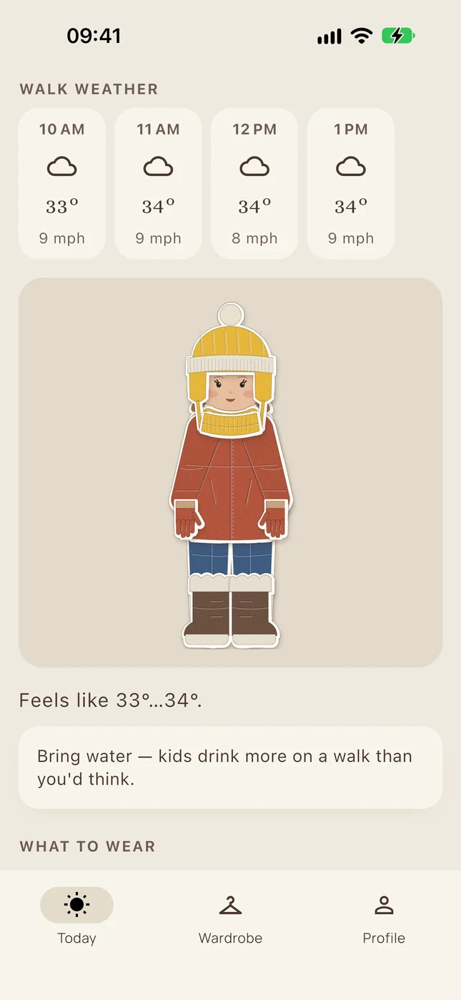
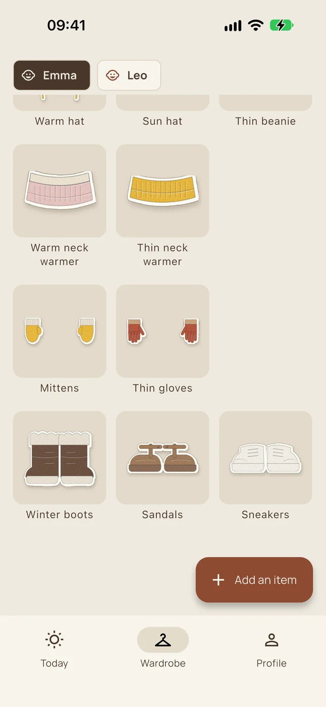
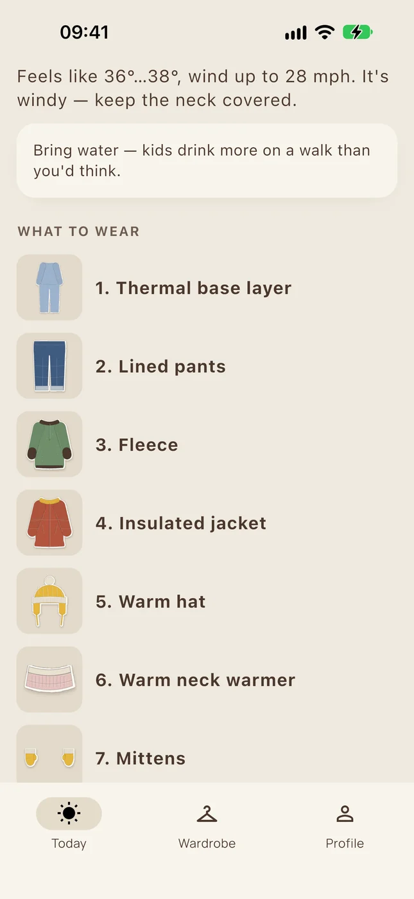
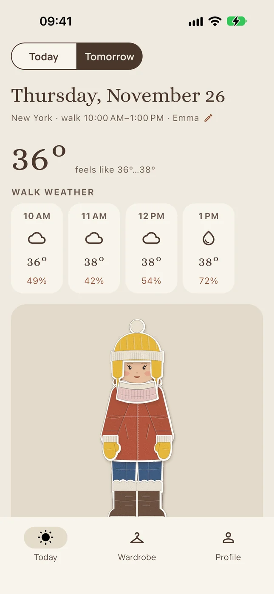
Pricing
Everyday outfit advice is free. Premium is for families who like to plan ahead.
$0
Free download, no ads
Everything in Free, plus:
Prices in US dollars; the App Store shows your local price, which may vary by country and include taxes. The yearly plan starts with a 3-day free trial; unless you cancel at least 24 hours before it ends, your Apple ID is charged $24.99 and the subscription renews automatically every year. The monthly plan renews automatically every month at $3.99. Cancel any time in Settings → your name → Subscriptions. See our Terms of Use.
FAQ
It looks at the forecast for your walk hours only — feels-like temperature, wind, rain, snow and UV — then factors in your child's age and how they get around: in a stroller, on foot, or running and playing. The outfit is built layer by layer from your child's wardrobe, and your Cold, Fine and Hot taps after walks fine-tune what comes next.
Yes. Babies who ride in a pram or stroller are dressed a layer warmer, with a footmuff or blanket when it's cold, and under 6 months we suggest shade rather than sunscreen. Toddlers and older kids get layers that suit how active they are.
Pompom is free to download and gives you today's outfit for your walk. Pompom Premium adds an unlimited wardrobe, tomorrow's outfit the night before and hour-by-hour walk weather for $3.99 a month or $24.99 a year, and the yearly plan starts with a 3-day free trial. Subscriptions renew automatically through your Apple ID until you cancel.
No. You can start right away as a guest. Sign in with Apple whenever you like, so your wardrobe and settings come with you to a new iPhone.
No. Pompom gives general, informational suggestions based on the weather and published pediatric guidance. You know your child best: if they seem cold, hot or unwell, trust what you see and talk to your pediatrician.
We collect only what's needed to dress your child for the weather, such as their first name and birth date, your city and walk time, the clothes you add and your walk feedback. No ads, no ad trackers, and we never sell data. You can delete everything at any time in the app under Profile → Delete all data. The details are in our Privacy Policy.
Yes. You can add more than one child and invite a second parent, so whoever is on morning duty sees the same outfit.
Something else? Visit Support or write to support@heypompom.com.
Download Pompom and get today's outfit in under a minute.